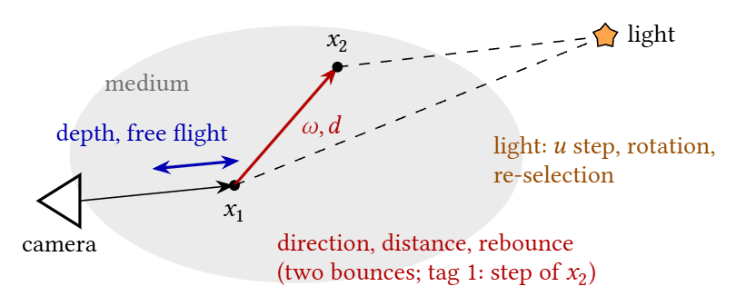
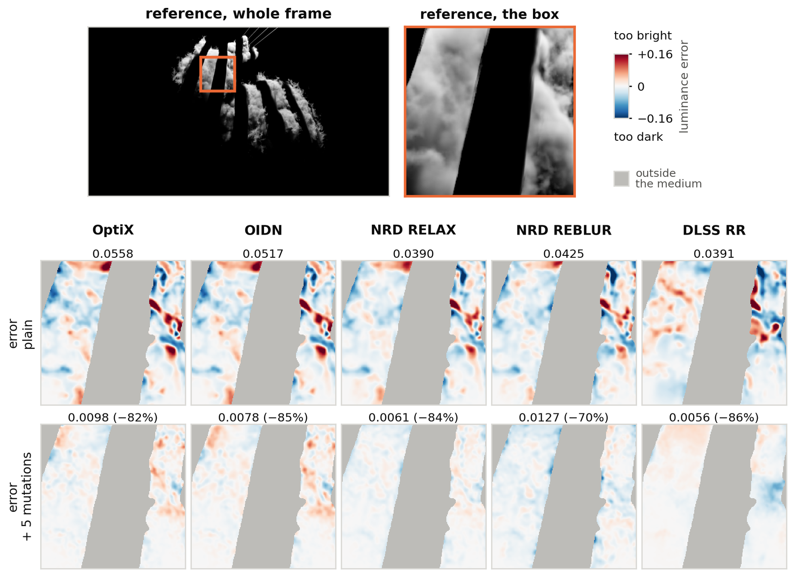
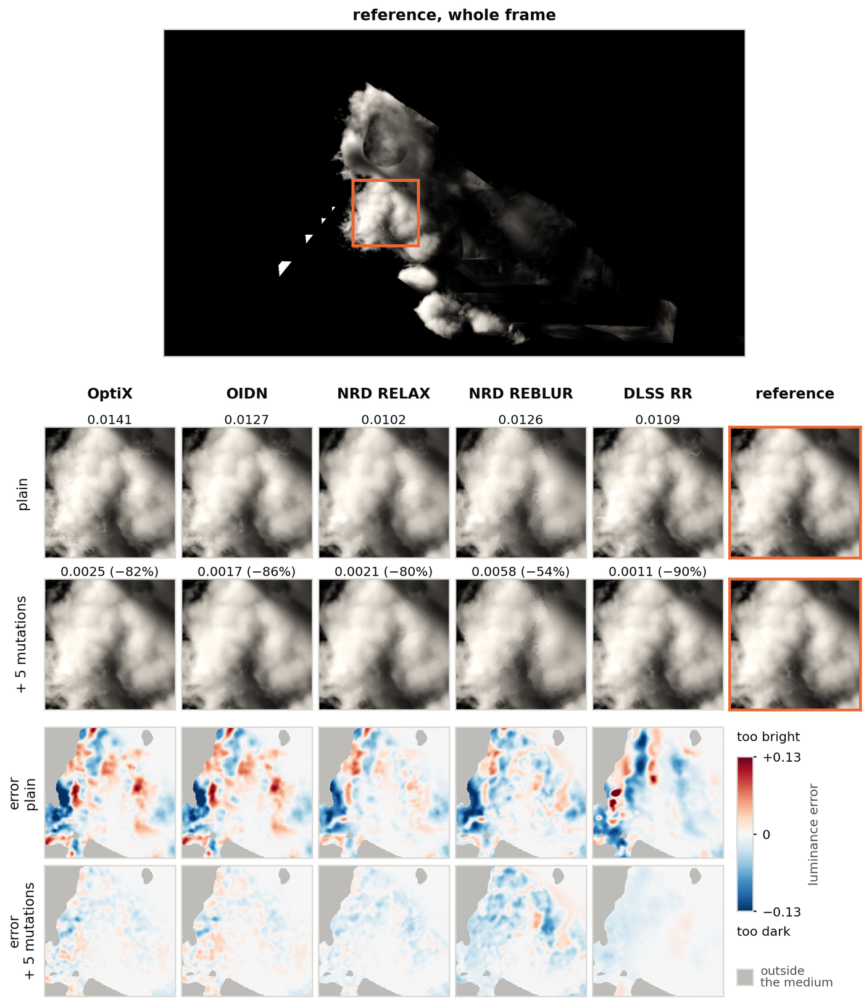
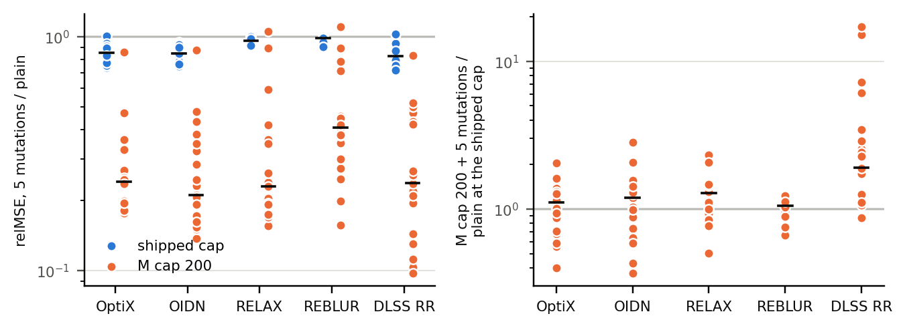
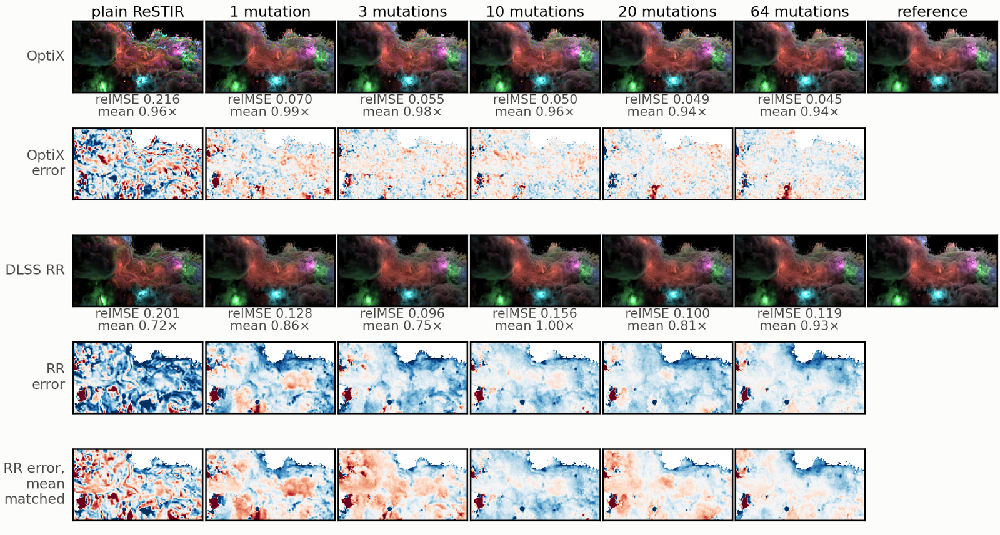
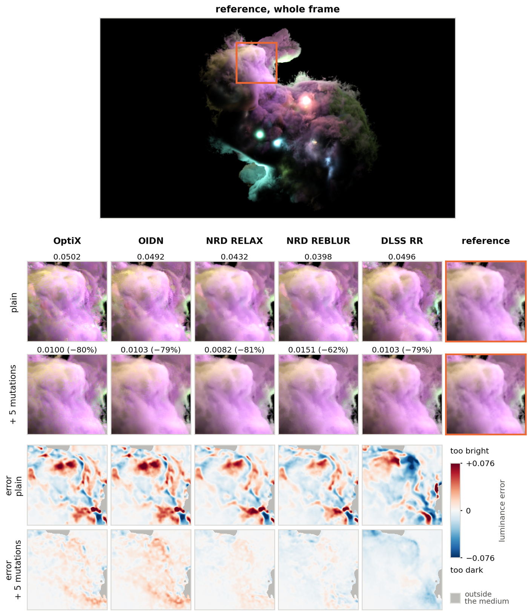
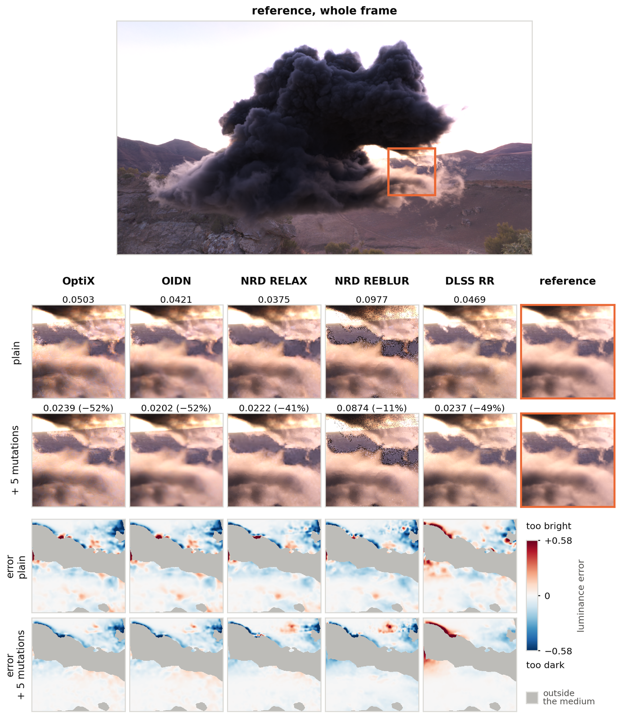
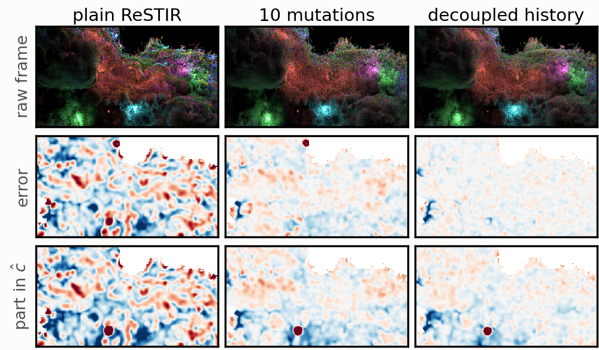

Volumetric ReSTIR renders participating media at one sample per pixel by reusing samples across pixels and frames, and the reuse correlates the remaining error into blotches that denoisers keep. We bring the Metropolis–Hastings mutations of Sawhney et al. to volumes, with moves along the camera ray, on the light and, at two bounces, on the bounce itself; we argue the pass is unbiased and a test on ten setups detects no bias (p = 0.55).
We judge it through five denoisers (OptiX, OIDN, NRD's RELAX and REBLUR, and DLSS Ray Reconstruction) on 19 setups at two history lengths. With a 200-frame history, five mutations cut the in-medium error after the denoiser by a median of 59–79% across the denoisers. At the shipped four-frame history the median cut is 1.5–17%, and plain ReSTIR there beats the long history with mutations on most setups; the long history wins on 5–7 of the 19, mostly scenes lit by many lights. What mutations cannot change is a pixel's brightness, which lives in its reservoir's normalization; there a decoupled history removes more. After a 2.5–4.1× faster pass, five mutations add 10–52% to the frame.
Volumetric ReSTIR [Lin 2021] keeps one sample per pixel in a reservoir: a scatter distance along the camera ray and a light sample. Spatial reuse lends samples between neighbouring pixels and temporal reuse carries them into the next frame. After reuse many pixels hold the same sample, so their errors move together and what is left shows as blotches rather than grain. A denoiser averages neighbouring pixels, which cancels independent noise but keeps an error that pixels share.
Spatial reuse creates the correlation and the history multiplies it. In the smoke of a plume, the correlation at 8 pixels rises from 0.016 at the shipped M cap of 4 to 0.120 at a cap of 200. Through NRD the effect is strongest: on Bistro, the denoised output's covariance at 8 pixels is 16 times (RELAX) and 60 times (REBLUR) that without reuse, against 1.1 times through OptiX.
After reuse, every pixel runs a short Metropolis–Hastings chain on its own reservoir sample with its own target p̂ [Sawhney 2024]. A step proposes a nearby sample z and accepts it with probability min(1, p̂(z) / p̂(x)), so the sample stays distributed as before while each pixel's copy wanders on its own random numbers. The contribution weight moves with it by Eq. 16 of Sawhney et al., which keeps the estimate unbiased:
W(z) = p̂(x₀) / p̂(z) · W(x₀)
In the reservoir this is runningSum ← runningSum · p̂(x₀) / p_y and
p_y ← p̂(z), with the candidate count M unchanged. We add moves
for participating media:

What each move changes. One bounce: the scatter depth of x₁ along the camera ray and the light sample (dashed from x₁). Two bounces: also the bounce (ω, d) to x₂, whose light connection the light moves act on; an emitting x₂ is moved by a small step in volume.
| Move | Kind | What it changes |
|---|---|---|
| Depth | local step | Pauly et al.'s propagation perturbation of the scatter distance along the camera ray [Pauly 2000] |
| Free flight | independence | a new distance from the renderer's free-flight sampler; it crosses empty gaps that a small step cannot |
| Light | local step | a step of the point on an emissive triangle, or a rotation of an environment direction by 0.1–5° |
| Re-selection | independence | a fresh light sample from the renderer's own light samplers |
| Direction, distance, rebounce | local / independence | at two bounces, the bounce to the second vertex: turned, stretched, or redrawn from the phase function and free flight |
Local steps accept with the ratio above; independence moves correct for their sampler's density q, accepting with min(1, p̂(z) q(x) / (p̂(x) q(z))). The pass runs after spatial reuse rather than after temporal reuse, so the mutated sample is both what is shaded and what the next frame inherits. We argue the pass is unbiased, and a test on ten setups with 64 seed-paired chains each detects no bias (χ² = 8.77 on 10 degrees of freedom, p = 0.55).
We rendered 19 setups (smoke, clouds, explosions, a foggy night street and many-light swarms, at one and two bounces) with and without five mutations, at the shipped M cap of 4 and at 200, and passed every run through NVIDIA OptiX, Intel OIDN, NRD RELAX and REBLUR, and DLSS Ray Reconstruction. Each is scored by its relative MSE inside the medium against a path-traced reference.

Light through slats with a 200-frame history. Top: the path-traced reference, its whole frame with the box where plain ReSTIR with OptiX errs most, and the box enlarged. Below: each denoiser's signed luminance error against the reference in that box, for plain Volumetric ReSTIR (upper row) and with five mutations per pixel (lower row). Red is too bright, blue too dark, grey lies outside the medium; the numbers are relative MSE over the whole medium.

Cathedral god rays at M cap 200. Top: the reference's whole frame with the box where plain ReSTIR with OptiX errs most. Below, per denoiser, the box plain and with five mutations, each row ending in the reference (relative MSE in the medium above each), and each one's error.

Left: each setup's in-medium relative MSE with five mutations over without, at the shipped cap (blue) and at M cap 200 (orange); bars are medians. Right: M cap 200 with five mutations over plain ReSTIR at the shipped cap; below 1 the long history with mutations is better.
The count matters where each step has only a small chance of changing what a pixel shows. On five setups built for that, one mutation leaves 28–82% more error than ten after OptiX at M cap 200. On the swarm of 192 lights, OptiX's error falls with every count, most of it by three and little after ten.

The 192-light swarm at M cap 200 with 0 to 64 mutations, through OptiX (first row) and DLSS Ray Reconstruction (third row), with their error maps against the reference (red too bright, blue too dark). Ray Reconstruction's overall brightness swings from frame to frame; the last row divides it out.
Two of the nineteen setups from the paper's appendix, in the layout of the cathedral figure above: the reference's whole frame with the box where plain ReSTIR with OptiX errs most; per denoiser, the box plain and with five mutations, each row ending in the reference, with the relative MSE in the medium above each (mean of two chains); then each one's error against the reference (red too bright, blue too dark, one scale per figure; grey lies outside the medium). Click a figure to open it at full size.

Each pixel takes the colour of the one lantern its sample chose, so reuse clumps colour as well as brightness. Five mutations cut the error by 79–81% through OptiX, OIDN, RELAX and Ray Reconstruction, and by 62% through REBLUR.

Five mutations cut the error by about half through OptiX, OIDN and Ray Reconstruction (49–52%) and by 41% through RELAX. Through REBLUR the cut is 11%: its dark speckles at the cloud's edges are there with and without mutations.
A pixel's estimate is (f / p̂)(z) · ĉ with ĉ = runningSum / M. Since p̂ is close to the luminance of f, a pixel's brightness lives mostly in ĉ, which Eq. 16 keeps unchanged. With spatial reuse's output as the next frame's history, ĉ becomes a shared, blotchy field of its own: on a swarm of 192 coloured lights, 97–98% of the blotch variance in brightness error lies in ĉ.

The swarm at M cap 200: the raw frame (top), its brightness error against the reference (middle), and the part of that error in the reservoir's normalization ĉ (bottom). The blotches that ten mutations leave sit where ĉ's are; a decoupled history removes them.
The work builds on our port of Volumetric ReSTIR [Lin 2021] to Falcor 9.0 [Falcor 2022] with GVDB volumes [Hoetzlein 2016]. The mutation pass is a compute pass after spatial reuse. All runs use one laptop with an NVIDIA GeForce RTX 5070 Laptop GPU (8 GB). The denoisers are integrated as render passes in the Falcor pipeline:
The references are path traced with decomposition tracking [Kutz 2017] for free flights and ratio tracking [Novák 2014] for shadow rays, over 2048 frames of 16 samples per pixel.
[Lin 2021] Lin, D., Wyman, C. and Yuksel, C., 2021. Fast volume rendering with spatiotemporal reservoir resampling. ACM Transactions on Graphics (TOG), 40(6).
[Bitterli 2020] Bitterli, B., Wyman, C., Pharr, M., Shirley, P., Lefohn, A. and Jarosz, W., 2020. Spatiotemporal reservoir resampling for real-time ray tracing with dynamic direct lighting. ACM Transactions on Graphics (TOG), 39(4).
[Sawhney 2024] Sawhney, R., Lin, D., Kettunen, M., Bitterli, B., Ramamoorthi, R., Wyman, C. and Pharr, M., 2024. Decorrelating ReSTIR Samplers via MCMC Mutations. ACM Transactions on Graphics (TOG), 43(1).
[Talbot 2005] Talbot, J., Cline, D. and Egbert, P., 2005. Importance Resampling for Global Illumination. Eurographics Symposium on Rendering, pp. 139–146.
[Hastings 1970] Hastings, W.K., 1970. Monte Carlo Sampling Methods Using Markov Chains and Their Applications. Biometrika, 57(1), pp. 97–109.
[Pauly 2000] Pauly, M., Kollig, T. and Keller, A., 2000. Metropolis Light Transport for Participating Media. Rendering Techniques 2000 (Eurographics Workshop on Rendering), pp. 11–22.
[Kelemen 2002] Kelemen, C., Szirmay-Kalos, L., Antal, G. and Csonka, F., 2002. A Simple and Robust Mutation Strategy for the Metropolis Light Transport Algorithm. Computer Graphics Forum, 21(3), pp. 531–540.
[Zhou 2025] Zhou, W., 2025. Correlation-Aware Rendering: Improving Sampling and Denoising for Realistic Image Synthesis. PhD thesis, University of Waterloo.
[Kutz 2017] Kutz, P., Habel, R., Li, Y.K. and Novák, J., 2017. Spectral and decomposition tracking for rendering heterogeneous volumes. ACM Transactions on Graphics (TOG), 36(4).
[Novák 2014] Novák, J., Selle, A. and Jarosz, W., 2014. Residual ratio tracking for estimating attenuation in participating media. ACM Transactions on Graphics (TOG), 33(6).
[Chaitanya 2017] Chaitanya, C.R.A., Kaplanyan, A.S., Schied, C., Salvi, M., Lefohn, A., Nowrouzezahrai, D. and Aila, T., 2017. Interactive Reconstruction of Monte Carlo Image Sequences Using a Recurrent Denoising Autoencoder. ACM Transactions on Graphics (TOG), 36(4).
[Schied 2017] Schied, C., Kaplanyan, A., Wyman, C., Patney, A., Chaitanya, C.R.A., Burgess, J., Liu, S., Dachsbacher, C., Lefohn, A. and Salvi, M., 2017. Spatiotemporal variance-guided filtering: real-time reconstruction for path-traced global illumination. Proceedings of High Performance Graphics (HPG).
[Zhdan 2021] Zhdan, D., 2021. ReBLUR: A Hierarchical Recurrent Denoiser. Ray Tracing Gems II, pp. 823–844.
[NRD 2026] NVIDIA, 2026. NVIDIA Real-Time Denoisers (NRD). Version 4.17.
[Áfra 2026] Áfra, A.T., 2026. Intel Open Image Denoise. Version 2.3.3.
[Einhorn 2023] Einhorn, E. and Mawdsley, J., 2023. Generate Groundbreaking Ray-Traced Images with Next-Generation NVIDIA DLSS. NVIDIA Technical Blog.
[Hoetzlein 2016] Hoetzlein, R.K., 2016. GVDB: Raytracing Sparse Voxel Database Structures on the GPU. High Performance Graphics, pp. 109–117.
[Falcor 2022] Kallweit, S., Clarberg, P., Kolb, C., Davidovič, T., Yao, K.-H., Foley, T., He, Y., Wu, L., Chen, L., Akenine-Möller, T., Wyman, C., Crassin, C. and Benty, N., 2022. The Falcor Rendering Framework. Version 9.0.